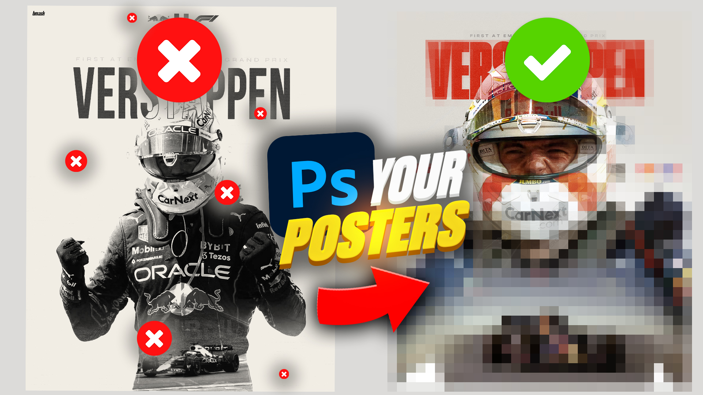
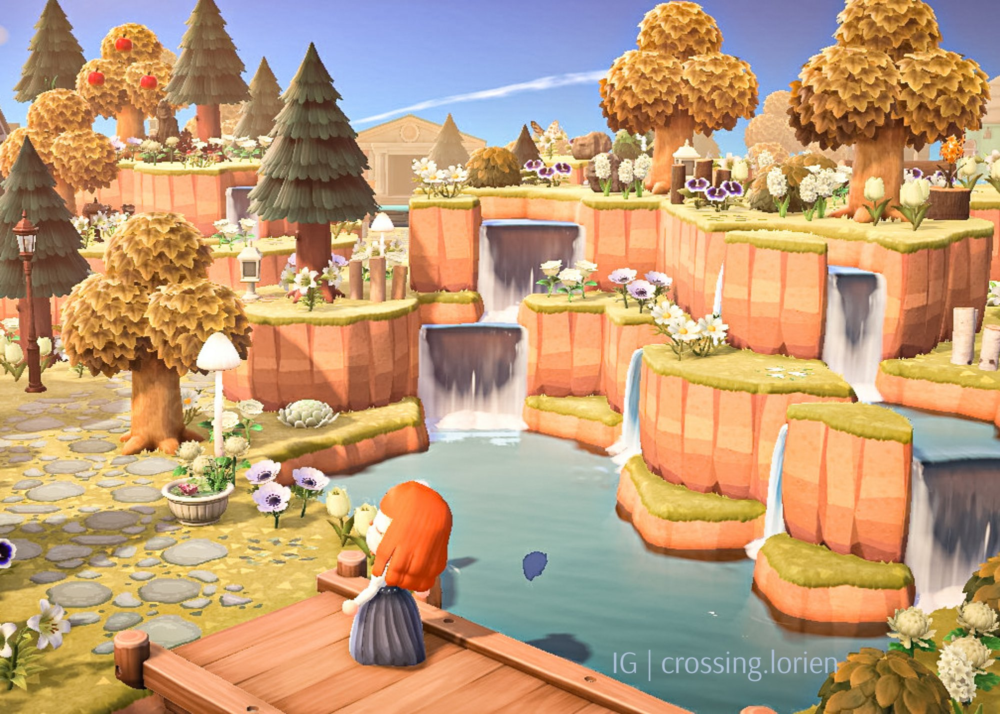
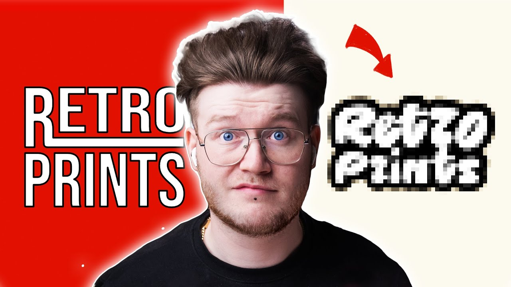

Seso

Credit: SesoHQ on X
Seso is an Art Director with a YouTube channel dedicated to graphic design
content. Watching his videos on design helps me think about designs as he
critiques others who are getting into graphic design. His videos redesigning
other projects are entertaining to me as his changes help elevate a design
and he explains his design decisions and why his changes work better for
what the original designer might be looking to achieve. He also has a bunch
of tutorials for others to learn about graphic design tricks.
Lex Play/Animal Crossing: New Horizons
Credit: lexplayyy on X
Lex Play is an island designer in a game called Animal Crossing New Horizons.
This is a game that inspires me because of the amount of creativity the
community produces. This game was designed as chores for people to complete
daily and interact with animals who stay with you on an island. You are in
charge of this island and can alter the island and design the island to your
liking. Seeing what the community can create is mind boggling to me and makes me
want to do the same. But, it is also difficult to do because it takes time. But
seeing the creative designs of others just wows me.
Will Patterson

Credit: Will Patterson on YouTube
Will Patterson is a logo designer that has inspired me in the past. I am
particularly drawn to designers redesigning other peoples design. In a way it is
designing in a way that is educational to me. Fixing beginners mistakes and why
this other way might be better for the design. Will Patterson is one of the
first designers I watched where I gained more interest in design.